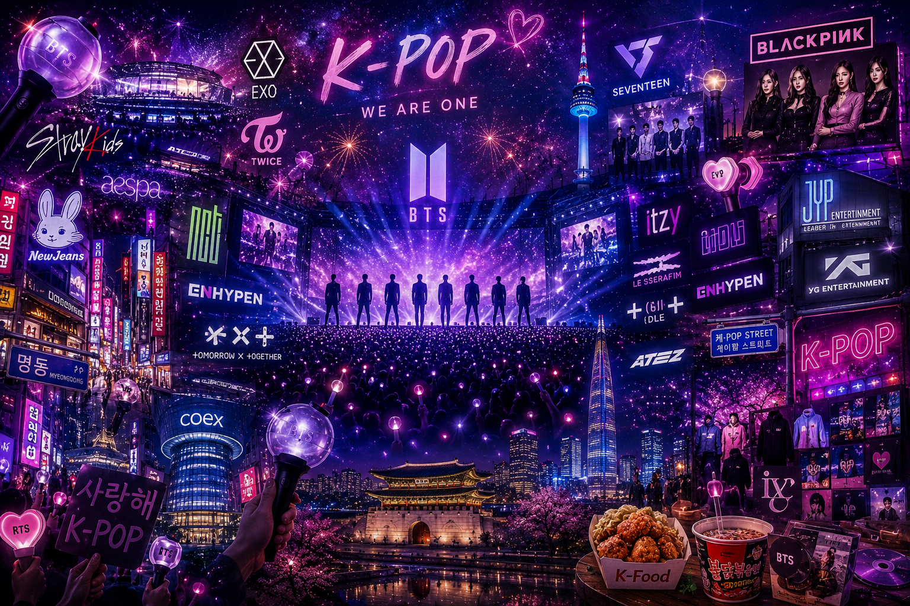
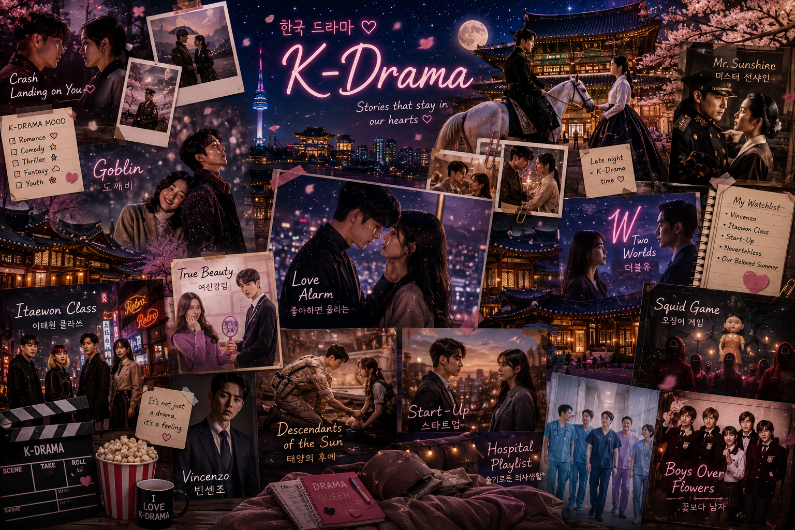

🏯 История
История Южной Кореи
История Кореи насчитывает тысячи лет. Страна прошла путь от древних королевств до одной из самых технологически развитых стран мира. После Корейской войны Южная Корея начала стремительно развиваться, создав мощную экономику, современную инфраструктуру и известные на весь мир компании.
🎎 Культура
Традиции
Корейская культура известна уважением к семье, старшим поколениям и традициям. Национальная одежда ханбок, праздники, чайные церемонии и традиционные дворцы являются важной частью жизни страны.
🎤 K-pop

Музыка, покорившая мир
K-pop — один из самых популярных музыкальных жанров в мире. Он сочетает современную музыку, танцы, яркие костюмы и впечатляющие шоу. Самыми известными группами являются BTS, BLACKPINK, EXO, TWICE, SEVENTEEN, Stray Kids, NewJeans и многие другие. Сегодня миллионы поклонников по всему миру изучают корейский язык, посещают концерты и интересуются культурой Южной Кореи.
🎬 Корейские дорамы
Популярные дорамы
Южная Корея знаменита своими сериалами. Они отличаются интересным сюжетом, качественной съёмкой и красивой музыкой. Известные дорамы:
- Crash Landing on You
- Goblin
- True Beauty
- Business Proposal
- Squid Game
- Extraordinary Attorney Woo
- Descendants of the Sun

🍜 Национальная кухня
🥬 Кимчи
Самое известное традиционное блюдо Кореи. Готовится из пекинской капусты с острыми специями.
🍜 Рамён
Популярная лапша быстрого приготовления, которую любят как жители страны, так и туристы.
🍖 Барбекю
Корейское BBQ — одно из самых популярных гастрономических развлечений, где мясо готовят прямо за столом.
🏙️ Сеул

Столица Южной Кореи
Сеул — огромный современный мегаполис, в котором древние дворцы соседствуют с небоскрёбами, торговыми центрами, кафе, парками и современными технологиями. Здесь находятся дворец Кёнбоккун, башня N Seoul Tower, район Мёндон, река Хан и множество красивых мест для прогулок.
🏯 Достопримечательности
🏰 Дворец Кёнбоккун
Главный королевский дворец Сеула, построенный в XIV веке. Одно из самых красивых исторических мест Южной Кореи.
🗼 N Seoul Tower
Башня высотой более 230 метров, с которой открывается потрясающий вид на весь Сеул.
🌸 Остров Нами
Одно из самых популярных мест для прогулок, особенно весной, когда цветёт сакура.
⚽ Спорт
Популярные виды спорта
Жители Южной Кореи любят спорт. Самыми популярными являются:
- 🥋 Тхэквондо (национальный вид спорта)
- ⚽ Футбол
- ⚾ Бейсбол
- 🏹 Стрельба из лука
- ⛸️ Конькобежный спорт
- 🏸 Бадминтон
🎓 Образование
Одна из лучших систем образования
Южная Корея входит в число стран с самым высоким уровнем образования. Ученики уделяют много времени учёбе, а университеты, такие как Seoul National University, KAIST и Yonsei University, известны во всём мире.
✅ Плюсы и ❌ Минусы
✅ Плюсы
- 🌸 Очень безопасная страна
- 🚄 Современный транспорт
- 📶 Быстрый интернет
- 💻 Развитые технологии
- 🎤 K-pop и дорамы
- 🍜 Вкусная кухня
- 🏙️ Красивые города
- 🌺 Цветущая сакура весной
❌ Минусы
- 💸 Высокая стоимость жизни
- 📚 Большая учебная нагрузка
- 💼 Долгий рабочий день
- 🗣️ Сложный корейский язык
- 🏠 Дорогое жильё
- 🚶 Иногда очень много людей
💖 Интересные факты
5 000+
лет истории
51 млн
население
24 часа
активная жизнь города
🌸
весной цветёт сакура